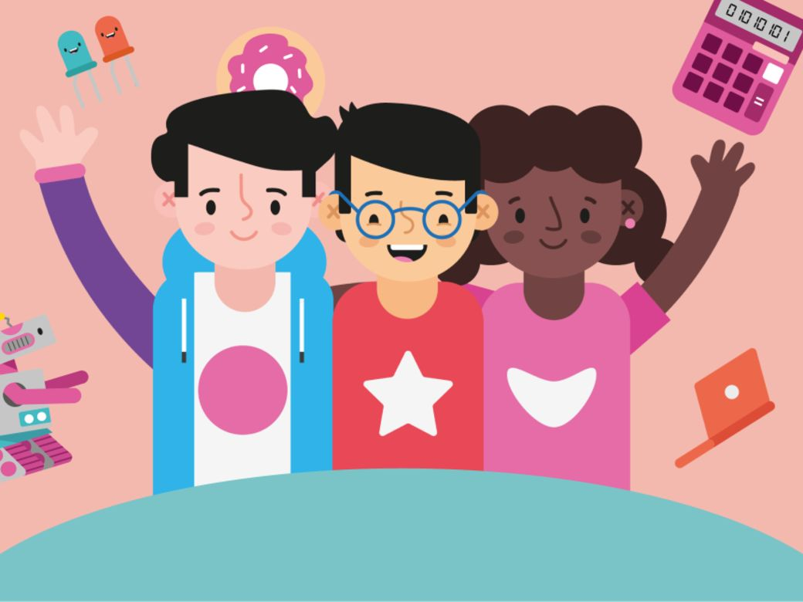

The community of free, local coding clubs for kids and teens
In over 100 countries, CoderDojo is the free, fun way to learn coding for kids and teens.
Find a Dojo Start a DojoPublic, accessible venues
Dojos take place in public, accessible spaces such as libraries, community centres, and even cinemas. Some venues provide equipment for kids and teens (Ninjas) to use.
Enthusiastic volunteers
Dojos are run by amazing, supportive volunteers who give their time to support kids and teens.
Free learning resources
Our website provides cool, free projects and other learning resources that anyone can use!
Volunteer at a Dojo
There are lots of ways for volunteers to support their computer coding club: they can plan coding sessions, promote sessions locally, communicate with parents, decide on learning resources, mentor young coders, and organise the space.
You don’t need to be a programmer or technology specialist to get involved! Lots of volunteers are parents and guardians of Dojo participants, and they start with no technical experience. Dojos benefit from having volunteers with different skills, backgrounds, and levels of knowledge to support and encourage kids and teens.
Learn more about volunteeringStart a Dojo
Another way to volunteer is to start your own Dojo and become a CoderDojo champion. A CoderDojo champion takes charge of setting up and maintaining a Dojo.
All you need to do is find a public venue to host your Dojo sessions and complete our simple application process. Our website provides resources and training to support you, plus we have a dedicated system to help you to manage your Dojo sessions.
Find out more